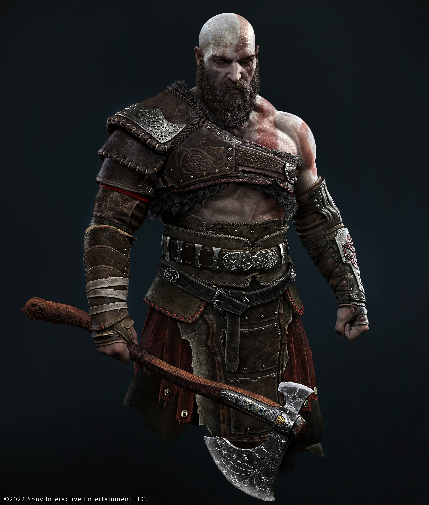

Kratos: The Greek God

Kratos, also known as Cratus or Cratos, is the greek personification of strenth.
Kratos is the god of war. He is the son of Pallas, and Styx.
- Kratos has a lot of resilience. Although a lot of Gods want to kill him, He always finds a way to rise up, and be better
- Kratos cares a lot about his wife, and even though she gave him the monumental task to spread her ashes from the highest point in the world, Kratos fulfills it with rigor
- Kratos loves his son and will do anything for him because family always comes first. Loki is his son.